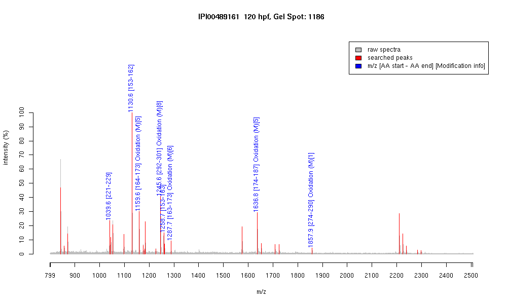

| Name | "PREDICTED: similar to Tubulin, beta, 2" |
|---|---|
| MW | 39709.1 |
| PI | 4.84 |
| Mascot Protein Score | 84 |
| Masses (matched / unmatched) | 8 / 27 |

| Peptide | MZ (calc) | MZ (observed) | Error (DA) | Error (PPM) | Start | Stop | Modifications |
|---|---|---|---|---|---|---|---|
| YLTVAAVFR | 1039.5935 | 1039.5906 | -0.0029 | -3 | 221 | 229 | |
| FPGQLNADLR | 1130.5953 | 1130.5999 | 0.0046 | 4 | 153 | 162 | |
| LAVNMVPFPR | 1159.6292 | 1159.6292 | 0 | 0 | 164 | 173 | Oxidation (M)[5] |
| ISEQFTAMFR | 1245.5933 | 1245.5935 | 0.0002 | 0 | 292 | 301 | Oxidation (M)[8] |
| FPGQLNADLRK | 1258.6902 | 1258.6798 | -0.0104 | -8 | 153 | 163 | |
| KLAVNMVPFPR | 1287.7241 | 1287.7156 | -0.0085 | -7 | 163 | 173 | Oxidation (M)[6] |
| LHFFMPGFAPLTSR | 1636.8304 | 1636.8304 | 0 | 0 | 174 | 187 | Oxidation (M)[5] |
| MAATFIGNSTAIQELFK | 1857.9415 | 1857.9172 | -0.0243 | -13 | 274 | 290 | Oxidation (M)[1] |